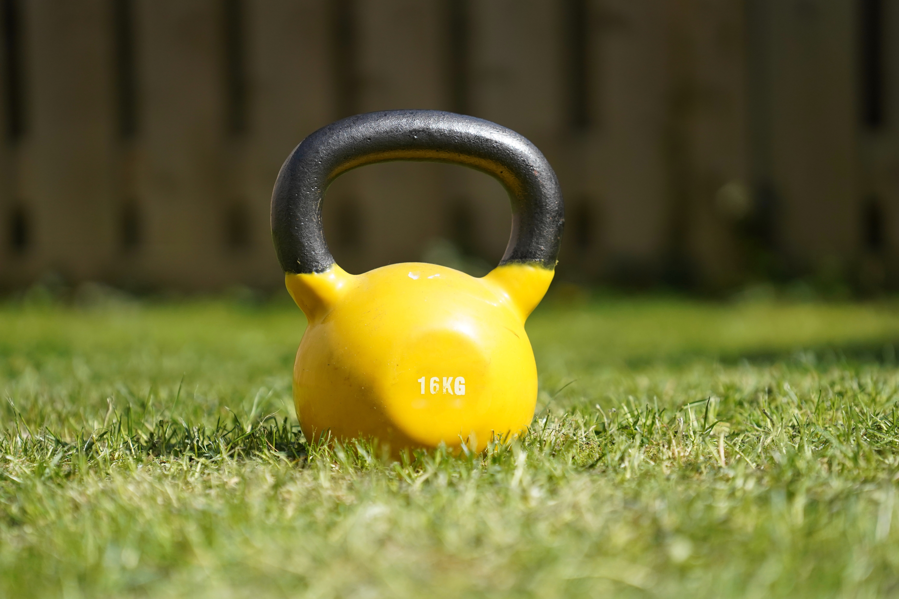

Major Health and Fitness Benefits of Lifting Weights
1. You'll Torch More Body Fat
Lifting weights can increase your lean body mass, which increases the number of overall calories you burn during the day," says Jacque Crockford, CSCS and spokesperson for the American Council on Exercise. Burning extra calories post-workout plus building muscle? That's the surefire way to get the body you want.
2. And You'll Especially Lose Belly Fat
While it is true that you can't spot reduce—your body is born with pre-conceived places
it wants to store fat
a University of Alabama study found that the women who lifted weights lost
more intra-abdominal fat (deep belly fat) than those who just did cardio.
This not only helps
you lose weight and build a more toned body, but it also lessens your risk of diabetes,
metabolic syndrome, and some cancers.
3. Your Muscles Will Look More Defined
Love the lean, defined muscles on super-fit ladies? "If women want more defination, they should lift heavier since they cannot get ger muscles because of low testosterone levels," says Jason Karp, an exercise physiologist and author."so, lifting heavier has the potential to make women more defined."
4. Burn More Calories Than Cardio
Why? Your muscle mass largely determines your resting metabolic rate—how many calories you burn by just living and breathing. "The more muscle you have, the more energy your body expends," says Perkins. "Everything you do, from brushing your teeth, to sleeping, to checking Instagram, you'll be burning more calories," Perkins says.
5. Strengthen Your Bones
Weight lifting doesn't only train your muscles; it trains your bones. When you perform a curl, for example, your muscles tug on yours bones.The cells within those bones react by creating new bone cells, says Perkins. Over time, your bones become stronger and denser.
6. Get Stronger, Obv
Lifting lighter weights for more reps is great for building muscle endurance, but if you want to increase your strength, increasing your weight load is key. Add compound exercises such as squats, deadlifts, and rows to your heavy weights and you'll be amazed at how fast you'll build strength.
7. Prevent Injury
Achy hips and sore knees don't have to be a staple of your morning run.Strengthening the muscles surrounding and supporting your joints can help prevent injuries by helping you maintain good form, as well as strengthening joint integrity.
8. Be a Better Runner
Stronger muscles mean better performance—period. Your core will be better able to support your body's weight and maintain ideal form during other exercises (like running), plus your arms and legs will be more powerful.What's more, since strength training increases number and size of calorie-torching muscle fibers fueling your performance, strength training could actually help you burn more calories during your cardio workouts
9. Increase Your Flexibility
Ignore that super ripped guy fumbling in yoga class for just a minute. Researchers from the University of North Dakota pitted static stretches against strength-training exercises and found that full-range resistance training workouts can improve flexibility just as well as your typical static stretching regimen.
10. Boost Heart Health
Cardiovascular exercise isn't the only exercise that's, well, vascular. In fact, strength training can up your heart health, too. In one Appalachian State University study,people who performed 45 minutes of moderate-intensity resistance exercise lowered their blood 20 percent.That's as good as—if not better than—the benefits associated with most blood pressure pills.
11. Feel Empowered
Throwing around some serious iron doesn't just empower women in the movies. Lifting heavier weights—and building strength as a result—comes with a big self-esteem boost.Your strength will not only show in your lean, toned body, but also in your attitude.